Across Punjab and far beyond, Guru Nanak Dev Ji travelled with Bhai Mardana Ji, sharing the Divine Word through song. Follow a life of searching questions, honest work and service, and discover how its teachings live on in Gurpurab today.
The Divine Word and the rabab. An interpretive illustration.
Parkash Gurpurab 2026
The 557th anniversary of Guru Nanak Dev Ji's birth in 1469. This is the widely observed reference date; confirm the programme with your local gurdwara. Official 2026 holiday listing
The celebration date and the birth date
The Parkash Gurpurab is generally celebrated on Kartik Purnima. The historical birth month is a separate question: several early accounts and many historians place the birth in Vaisakh, around April 1469. Local gurdwara programmes can follow different schedules. Background to the date
A life at a glance＋
Guru Nanak's life, followed by milestones in the tradition he began. Select a stop to read its chapter.
Guru Nanak Dev Ji, shown from behind out of respect. Interpretive illustration.
In 1469, in a village on the plains west of Lahore, a son was born to Mata Tripta and Mehta Kalu. The village was called Rai Bhoi di Talwandi. Today it is Nankana Sahib in Pakistan, and it carries his name. The family named the boy Nanak.
Mehta Kalu kept village revenue accounts, respectable work that depended on careful numbers. Nanak had an older sister, Nanaki, and she would become one of the most important people in his life. Sikhs remember her with love as Bebe Nanaki, and many regard her as the first to recognise who her brother was.
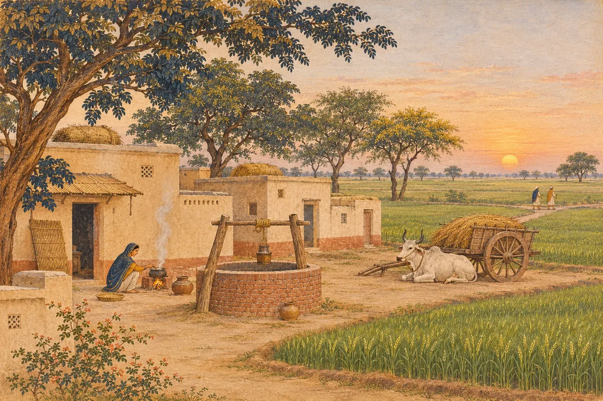
A village on the plains of Punjab, as it may have looked.
Punjab in those years was a land of crossings. Armies and traders moved through it on the road between Central Asia and Delhi, and the region was ruled by the Lodi sultans. Muslims and Hindus lived side by side, often in the same village, while caste decided whom a person could marry, eat with, or even touch. Religious authority frequently lay with those who controlled ritual. A poor person could spend a lifetime being told they stood at a distance from the Divine. This was the world Nanak would question.
Chapter 2A Childhood of Questions
Many beloved stories of Nanak's childhood come from the Janamsakhis, devotional accounts of his life preserved in different collections and tellings. We tell them here as stories of that tradition. About the Janamsakhis
Read in that spirit, they paint a consistent picture of a child who was gentle, thoughtful, and difficult to steer.
A Janamsakhi story
A thread of compassion and truth
Sikh tradition remembers a gathering for Nanak's upanayana, the ceremony in which he was to receive the sacred thread, or janeu. Family and relatives had assembled, and the priest came forward to invest the boy with it.
In the sakhi, Nanak asks for a bond that will remain in a person's conduct. Cotton can become soiled and break; compassion, contentment, self-restraint and truth should accompany a person through life. The story remembers him declining the outward thread and choosing these qualities as his spiritual thread.
That image also appears in Guru Nanak's own verse in Asa di Var: compassion is the cotton, contentment the thread, self-restraint the knot and truth the twist. The ceremony is remembered in later tradition; the teaching about these inner qualities is preserved in Sri Guru Granth Sahib Ji, Ang 471.
In Hindu traditions, upanayana marks entry into learning, discipline and religious responsibilities; the thread also recalls those commitments. This sakhi explains Guru Nanak's spiritual emphasis. It should not be read as a complete account of Hindu understandings of the ceremony or as a judgment on the sincerity of Hindu families. The meaning of upanayana
Other stories describe a boy who sat lost in thought while the family’s buffaloes wandered into a neighbour’s crop, and who gave away what he had to anyone who seemed to need it more. His parents worried about him, as parents do. How would such a son ever earn a living?
Chapter 3Sacha Sauda: The True Bargain
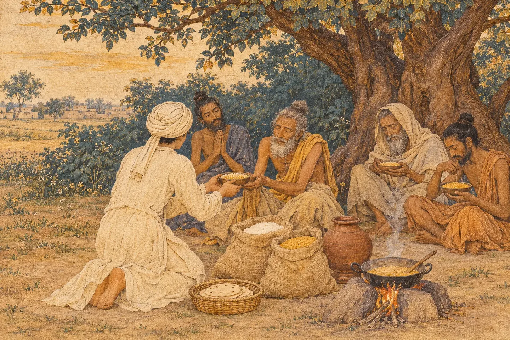
The true bargain, as told in the Janamsakhi tradition.
Janamsakhi tradition
Mehta Kalu decided that what his son needed was a start in business. He gave Nanak twenty rupees, a considerable sum, and sent him off with a companion to the market town of Chuharkana. The instructions were simple. Buy goods at a good price, bring them home, and make a profit.
They set out along the road. Somewhere on the way, they came across a group of holy men camped among the trees. The men had been without food for days, and they had no means of buying any.
Nanak looked at the money in his hand and at the hungry people in front of him. He went to the nearest village, spent all twenty rupees on flour, ghee, lentils and whatever else was needed, and brought it back so that the men could eat.
He returned home with empty hands. Mehta Kalu was furious. He had trusted his son with real money, and it had vanished in a single afternoon. Nanak’s answer gave the story its name. He had been sent to make a profitable deal, and he had made the truest one he could find. In Punjabi, it is remembered as the sacha sauda, the true bargain.
Tellings differ about Nanak’s age and about who travelled with him. A gurdwara called Sacha Sauda now stands at Farooqabad in Pakistan, at the place tradition associates with the meal.
The story has lasted because it turns a familiar word upside down. Mehta Kalu’s idea of profit is not foolish, and Sikhi does not scorn honest trade. Guru Nanak would later spend years as a working farmer. The story asks a different question: when you add up what a day has earned, what do you count? A family that shares a meal with someone in need has spent money and gained something the account book has no column for.
Chapter 4Sultanpur Lodhi and Spiritual Awakening
As a young man, Nanak followed his sister. Bebe Nanaki had married Jai Ram and moved to Sultanpur Lodhi, a prosperous town on the Bein, a small river in the Doaba region of Punjab. Jai Ram worked in the administration of Daulat Khan Lodi, and through him Nanak found a post at the modikhana, the government storehouse where grain and provisions were kept and paid out.
This was a settled and ordinary life. He married Sulakhni, known to Sikhs as Mata Sulakhni, and they had two sons, Sri Chand and Lakhmi Das. He kept accounts by day. Tradition remembers that he was scrupulously fair, that he gave generously from his own pay, and that he spent the hours before dawn in prayer and song.
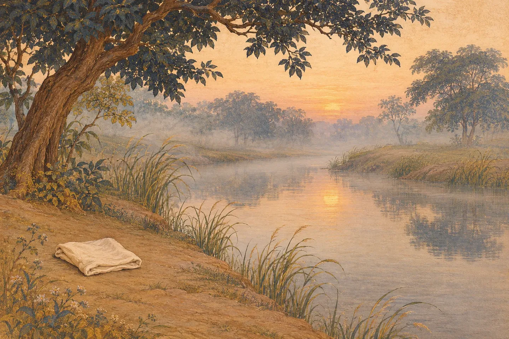
The Bein at first light, with a folded cloth on the bank.
Sikh tradition and Janamsakhi accounts
Three days at the river
One morning, as he often did, Nanak went to bathe in the Bein. He did not come back. His clothes were found on the bank. People searched the water, and the town came to believe he had drowned.
On the third day, he reappeared. The Janamsakhis describe what happened in between as an experience of being called into the Divine presence and given his mission. For a time he said little. When he did speak, the words remembered by tradition were startling in a town divided by religion: there is no Hindu, there is no Muslim.
In Sikh tradition, the river marks a turning point in Guru Nanak's calling. The remembered saying asks people to look beyond religious labels toward a life lived truthfully before the One. He left his post and gave away what he had. The accountant of Sultanpur was about to begin walking.
Chapter 5The Great Journeys
He did not travel alone. Bhai Mardana was a Muslim from Talwandi, born into a family of Mirasis, hereditary musicians whose place in society was low. He was some years older than Nanak and had known him since childhood. He played the rabab, a plucked string instrument with a deep, resonant voice.
Consider what that companionship meant in the world of the time. A man born a Hindu Khatri and a low-status Muslim musician shared the road, the food and the work of worship for years. Before anything was preached, the two of them were themselves the message.
Music was at the centre of it. Guru Nanak did not teach mainly through lectures or argument. He sang, Mardana played, and people stopped to listen. His teachings were poetry, composed in the languages people actually spoke and set to the classical musical modes called raag. The practice of singing the Divine Word, kirtan, remains at the heart of Sikh worship today. Sri Guru Granth Sahib Ji preserves verses in which Guru Nanak addresses Mardana by name.
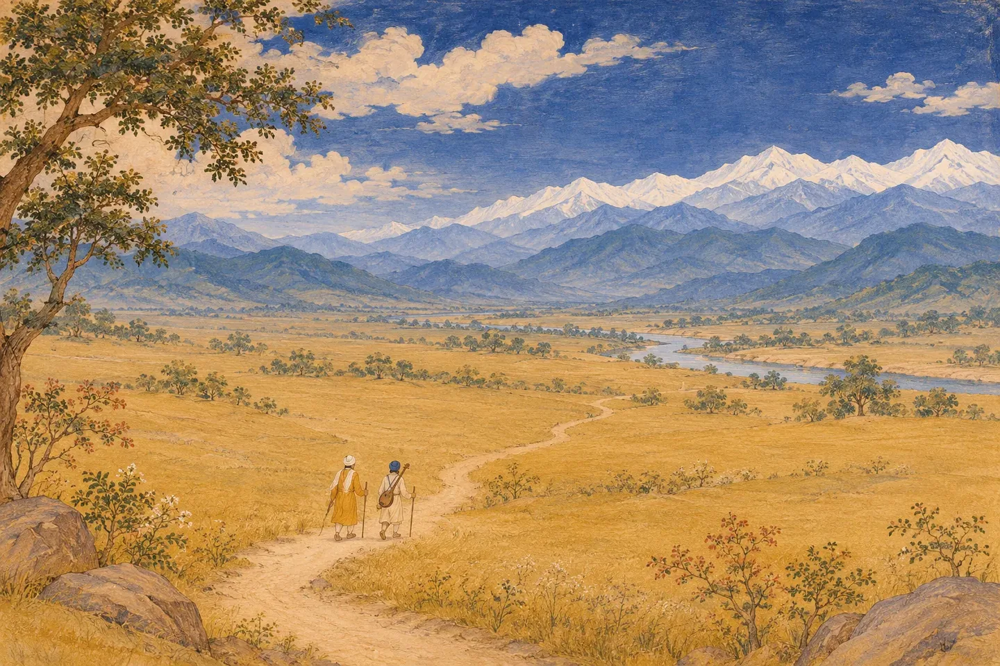
The long road of the Udasis. The route shown is imagined.
The following sakhis are remembered in the Janamsakhi tradition. They bring Guru Nanak's teaching into encounters over a meal, beside a river and in a place of pilgrimage. Each has a short source note below.
A Janamsakhi story
Bhai Lalo's bread
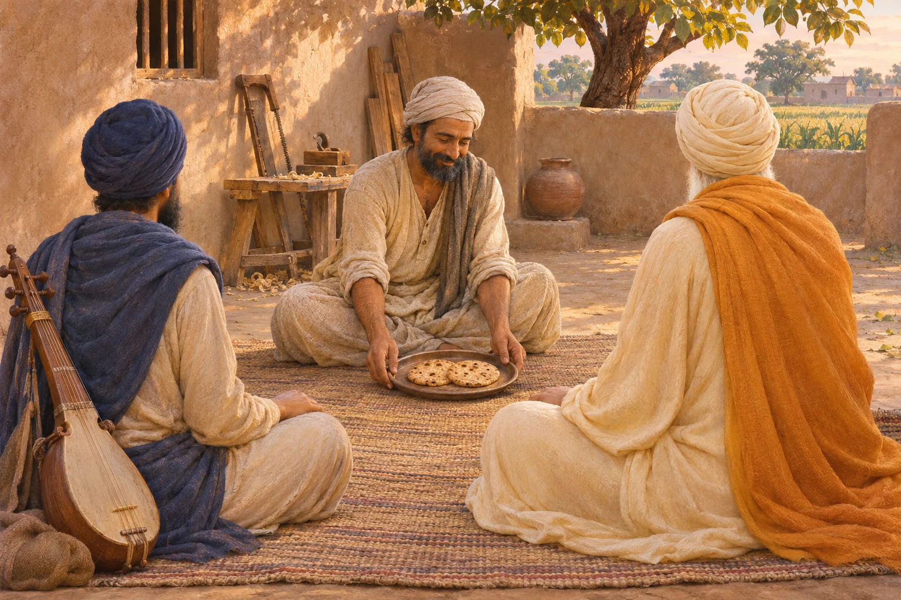
A place at Bhai Lalo's meal: hospitality without rank or privilege.
At Saidpur, now Eminabad in Pakistan, Guru Nanak and Bhai Mardana stayed in the home of a carpenter named Lalo. Their host had no great feast to offer. He shared the food of a working household, earned through his own labour.
In the telling collected by Macauliffe, Lalo asked whether the Guru would eat inside the specially marked space used to keep a meal ritually pure. Guru Nanak would eat where he was already sitting. Truthfulness, rather than a boundary drawn on the ground, was what mattered. He accepted Lalo's hospitality and remained his guest.
Elsewhere in the town, the wealthy official Malik Bhago gave a large feast. Guru Nanak was invited, but did not attend. When Bhago learnt of his absence, he summoned him. Why would a man born into a Khatri family eat in a carpenter's home while declining the food of an important official? The question exposed the distance that caste and wealth placed between the two hosts.
Guru Nanak asked for food from Bhago's feast and for some of Lalo's bread. He took one in each hand and pressed them. In the sakhi, milk flowed from Lalo's coarse bread, while blood came from Bhago's rich food.
The contrast made visible what the two meals had cost. Lalo's bread came from honest work. Bhago's wealth had been gathered through oppression; a splendid public feast could not make that suffering disappear. Guru Nanak had accepted the modest meal because the work behind it was clean.
The story gives kirat karni, honest earning, a form a family can remember. The important question at the table is how the food was earned and whether another person has been harmed to put it there.
At Haridwar, a familiar action becomes an unexpected question.
At Haridwar, pilgrims had gathered beside the Ganga. Standing in the river, they cupped water in their hands and offered it toward the east, where the sun was rising. The offerings were for their departed ancestors.
Guru Nanak went among them. He too cupped his hands, but turned toward the west and began sending water in the opposite direction. People noticed. They asked why he had come to a place of pilgrimage only to turn away from the direction in which everyone else was offering water.
He first asked about their own action. To whom was the water being sent? The pilgrims explained that it was meant for their ancestors, far away in another world. Then he continued to throw water toward the west.
Pressed for an explanation, he spoke of his field back home. He had left it sown, with nobody there to water it, and was sending water in its direction so that the crop would stay green. The people protested: the water would fall into the river long before it could reach a field in Punjab.
His answer returned them to the meaning of their offering. If water could not reach a nearby earthly field, how would it reach ancestors so much farther away? The unexpected action had invited them to consider the meaning of their prayer and the attention they brought to it.
The encounter invites a pause before any familiar practice: what does it mean, and where are the heart and mind while the hands perform it? In the telling, Guru Nanak directs attention toward remembrance of the Divine with love and devotion.
Hindu ancestral offerings are acts of faith, remembrance and prayer for the departed. The dialogue in this sakhi should not be taken as a complete explanation of those beliefs. It is presented here as a spiritual teaching within Sikh tradition. Ancestral remembrance in Hindu tradition
The western journey brought Guru Nanak to Mecca, the sacred city toward which Muslims turn in prayer. In Macauliffe's account, he arrived tired from travelling and rested in the mosque. When he lay down, his feet pointed toward the Kaaba.
A religious attendant saw the sleeping traveller and rebuked him for placing his feet in the direction of God's house. To the attendant, the direction of the body showed a failure of reverence.
Guru Nanak's reply asked him to do something simple: turn his feet toward a place where God was absent. The attendant took his feet and moved them. The sakhi then describes the wonder at the centre of the account: wherever the Guru was turned, the Kaaba appeared in that direction.
The question could no longer be answered by moving a pair of feet. A holy place could be honoured, but the Divine could not be confined within it. In the account, the people who witnessed the event gathered around Guru Nanak, and religious teachers began asking him about his faith.
Read beside Ik Oankar, the story opens out from a particular place to the whole of creation. No person stands beyond the One's presence. The same vision that crosses a boundary between religions also asks how we treat the person on the other side of it.
The exact routes and dates of the Udasis are debated, and devotional accounts differ. Macauliffe collected these stories centuries after Guru Nanak's lifetime; they are presented here as traditional sakhis. He also records a spiritual interpretation of the Mecca episode. The hymn addressed to Lalo on Ang 722 is a separate text and does not narrate the feast miracle.
Chapter 6Guru Nanak Dev Ji’s Teachings
Guru Nanak’s teaching does not ask a person to leave the world behind. It asks them to live fully in it, with the Divine in mind. Sikhs often describe the heart of this way of life through three daily commitments, and the ideas below grow from his hymns. SikhNet
ੴIk Oankar
There is One, present in all of creation. If so, no person is outside the Divine, and no community owns it. A Sikh meeting a stranger is meeting someone in whom the same One lives.
ਨਾਮ ਜਪਣਾNaam Japna
Remembering the Divine Name, through prayer, song and quiet repetition, until that awareness goes with you. It can begin early in the morning and continue while driving to work or washing dishes.
ਕਿਰਤ ਕਰਨੀKirat Karni
Earning a living honestly by your own effort. Work is not a distraction from spiritual life. Cheating a customer or cutting a corner at a job is a spiritual matter too.
ਵੰਡ ਛਕਣਾVand Chhakna
Sharing what you have and eating together. Many Sikhs set aside a portion of their income for others, a practice called daswandh. In a home, it can be as simple as always making enough for one more.
Service, equality and everyday conduct
ਸੇਵਾSeva
Selfless service, offered without expecting thanks. In a gurdwara you may find a doctor washing dishes beside a student. Doing the humble job is part of the point.
ਬਰਾਬਰੀEquality and dignity
Guru Nanak rejected the idea that birth makes anyone higher or lower, and he spoke up for women in a society that often treated them as impure. His words on this appear in Chapter 8.
ਨਿਮਰਤਾHumility and compassion
Ego, which Sikh teaching calls haumai, is what keeps a person apart from the One and from others. Humility is treated as a practice, renewed in how you listen and how you treat those with less power.
ਸਚੁ ਆਚਾਰੁTruthful living
Guru Nanak taught that Truth is higher than everything, and higher still is truthful living. Belief is measured by what a person actually does. Ang 62
Chapter 7Kartarpur: Living the Teachings
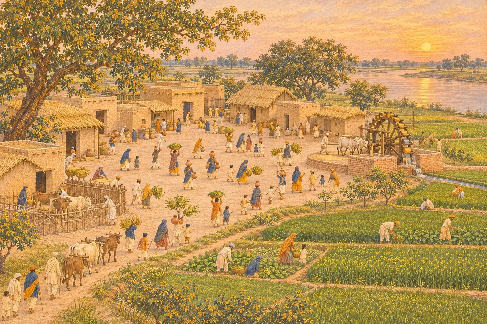
Daily life in a farming community on the Ravi, imagined.
After years on the road, Guru Nanak stopped walking. On the bank of the Ravi, on land given by a devotee, he settled the community of Kartarpur, the “Creator’s town”. Sources differ on the year it began. He spent the last part of his life there, and the place is now in Pakistan, close to the border with India.
Perhaps the most striking thing about Kartarpur is what the great teacher did next. He took off the traveller’s clothes and worked the land. The man whose hymns people had carried across regions was now a farmer among farmers, with his wife and family around him. It made his message difficult to dismiss. He had said that spiritual life belonged in ordinary work, and now anyone could come and watch him do it.
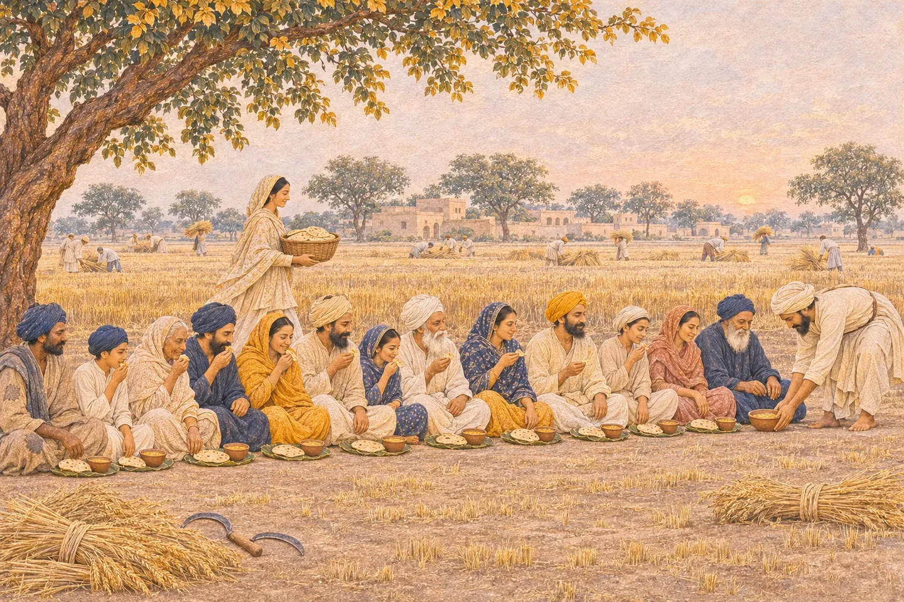
Work and a shared meal, everyone in the same row.
A rhythm grew around the day. People rose before dawn for prayer and the singing of hymns. They went out to work. They came back together in the evening for more kirtan. Those who gathered formed the sangat, the holy company, and in the sangat nobody’s caste or religion gave them a better seat.
Then there was the meal. In langar, the free community kitchen, everyone sat side by side on the same level and ate the same food. In a society where caste rules governed who could eat with whom, sitting down in that row was a quiet and radical act. No one needed a sermon to feel what it meant. Kartarpur took the teachings and turned them into a daily routine: work honestly, remember the One, share what you have, and serve one another.
The succession of Guru Angad Dev Ji
Among those drawn to Kartarpur was Bhai Lehna, from Khadur. He had come as a seeker and stayed to serve with complete devotion. As his life drew toward its end, Guru Nanak made a decision that surprised many. He passed over his own sons and named Lehna as his successor, giving him the name Angad, understood as “part of one’s own self”.
Those few lines carry enormous weight. Spiritual authority, in this new community, would pass by devotion and service rather than by blood. It also meant that the community would outlive its founder. Guru Nanak Dev Ji died at Kartarpur in September 1539, usually dated to the 22nd. A well-known tradition says that Hindus and Muslims both claimed the right to his last rites, and that when the sheet over his body was lifted, only flowers remained.
Chapter 8Sri Guru Granth Sahib Ji: The Eternal Guru
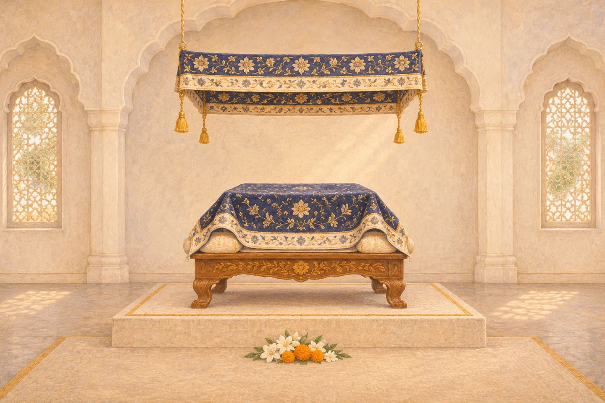
Sri Guru Granth Sahib Ji, covered with a rumala on the manji sahib.
Walk into any gurdwara and you will see where everyone’s attention is directed. At the front, raised beneath a canopy and wrapped in fine cloth, rests a book. People bow before it. An attendant waves a whisk, the chaur, above it as a mark of honour. At night it is carried to a resting place of its own. To a newcomer this may look like reverence for a holy book. For Sikhs it goes further: Sri Guru Granth Sahib Ji is the living Guru.
From Guru Nanak’s songs to a scripture
It helps to keep two things distinct. Guru Nanak composed Gurbani, the “Guru’s Word”. Close to a thousand of his hymns survive. He did not, however, compile the scripture we have today. That happened in stages after him.
The Gurus who followed him preserved his hymns and added their own. The fifth Guru, Guru Arjan Dev Ji, gathered this inheritance into one volume, the Adi Granth, with Bhai Gurdas as scribe. It was completed in 1604 and installed at Harmandir Sahib in Amritsar, with Baba Buddha as its first granthi, or custodian. Remarkably, Guru Arjan included not only the Sikh Gurus but also saints from other backgrounds, among them Kabir, Ravidas, Namdev and the Muslim Sufi Sheikh Farid.
The tenth Guru, Guru Gobind Singh Ji, added the hymns of his father, Guru Tegh Bahadur Ji. In 1708 at Nanded, before his death, he conferred Guruship on the scripture itself. There would be no further human Guru. The Word would guide the Sikhs from then on. The standard text has 1,430 pages, which Sikhs call Angs, meaning “limbs” of the Guru. History of the text
Ik Oankar and the Mul Mantar
The scripture opens with a single symbol: ੴ, Ik Oankar. It joins the numeral one to the word for the Divine, with a curve that extends outward as though without end. In that one sign is Guru Nanak’s central conviction: there is One, and that One is present in everything.
The line that follows is the Mul Mantar, the “root” statement of Sikh belief. It is made of short phrases describing the Divine, and it stands at the start of Japji Sahib, Guru Nanak’s great composition, which many Sikhs recite every morning.
English: One Universal Creator God. The Name Is Truth. Creative Being Personified. No Fear. No Hatred. Image Of The Undying, Beyond Birth, Self-Existent. By Guru’s Grace.
Transliteration and Hindi meaning
ikOankaar sat naam karataa purakh nirabhau niravair akaal moorat ajoonee saibha(n) gur prasaadh ||
हिन्दी: अकाल-पुरख एक है, जिसका नाम ‘अस्तित्व वाला’ है, जो सृष्टि का रचनहार है, जो सब में व्यापक है, भय से रहित है, वैर से रहित है, जिसका स्वरूप काल से परे है, जो योनियों में नहीं आता, जिसका प्रकाश अपने आप से हुआ है और जो सतगुरु की कृपा से मिलता है।
Mul Mantar · Guru Nanak Dev Ji · Sri Guru Granth Sahib Ji, Ang 1
Two further lines show how directly these ideas touched daily life. The first gives the shape of an honest life in a few words.
ਘਾਲਿ ਖਾਇ ਕਿਛੁ ਹਥਹੁ ਦੇਇ ॥ ਨਾਨਕ ਰਾਹੁ ਪਛਾਣਹਿ ਸੇਇ ॥੧॥
English: One who works for what he eats, and gives some of what he has, O Nanak, he knows the Path.
हिन्दी: जो मनुष्य मेहनत से कमाकर खाते हैं और उस कमाई में से कुछ औरों को भी देते हैं, हे नानक! ऐसे लोग ही जीवन का सही रास्ता पहचानते हैं।
Salok, Guru Nanak Dev Ji · Sarang ki Var · Sri Guru Granth Sahib Ji, Ang 1245
The second comes from Asa di Var, in a passage that challenges the contempt shown to women in his society.
ਸੋ ਕਿਉ ਮੰਦਾ ਆਖੀਐ ਜਿਤੁ ਜੰਮਹਿ ਰਾਜਾਨ ॥
English: So why call her bad? From her, kings are born.
Transliteration and Hindi meaning
so kiau ma(n)dhaa aakheeaai jit ja(n)meh raajaan ||
हिन्दी: जिस स्त्री से राजा भी पैदा होते हैं, उसे बुरा कहना ठीक नहीं है।
Salok, Guru Nanak Dev Ji · Asa di Var · Sri Guru Granth Sahib Ji, Ang 473
Gurbani in everyday life
For Sikhs, Gurbani is not reserved for special occasions. Verses are recited at dawn and at night, sung at weddings and at funerals, and consulted for guidance. In a gurdwara, a passage is read aloud each day from a page opened at random. This is the Hukamnama, the Guru’s word for the day. A family may have read the same hymn for generations and still find something new in it.
Chapter 9How Gurparb Is Celebrated
A Gurparb is a day of remembrance connected with one of the Gurus. Guru Nanak Dev Ji’s Parkash Gurparb is among the most widely celebrated in the Sikh year. The sequence below is common, but customs and schedules vary between gurdwaras and communities. Common observances
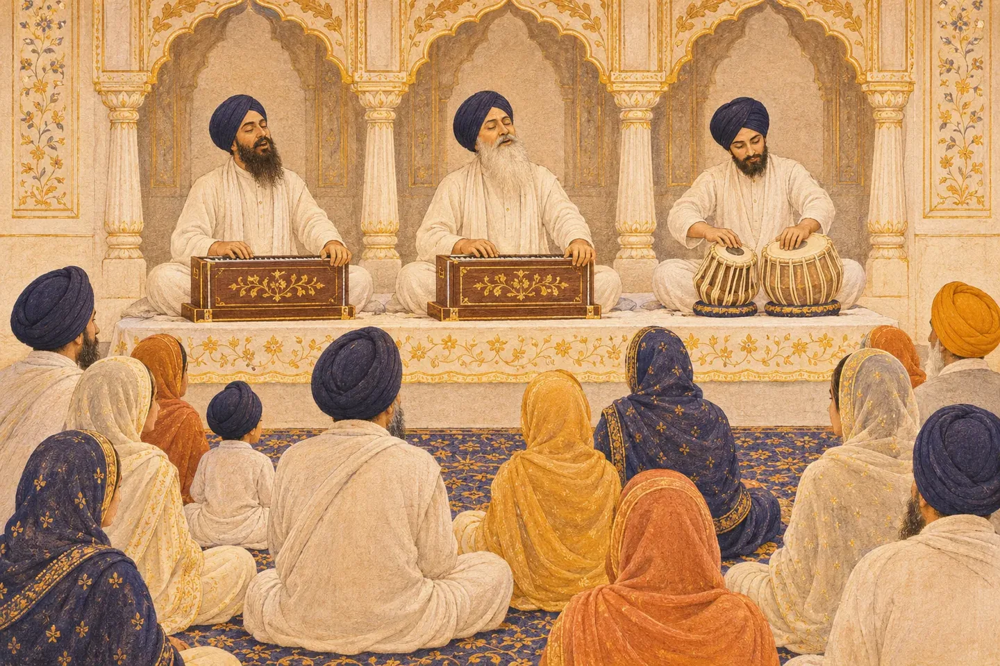
Ragis singing Gurbani kirtan before the sangat.
Akhand Path
An unbroken reading of the whole of Sri Guru Granth Sahib Ji by a relay of readers, taking about 48 hours. It generally begins two days before Gurparb and concludes on the morning of the day itself.
Prabhat Pheri
In the days before, small groups walk through their neighbourhoods in the early morning singing hymns.
Nagar Kirtan
“Kirtan through the town”. Usually a day or so before Gurparb, a procession carries Sri Guru Granth Sahib Ji on a decorated float, with hymns, volunteers sweeping the road ahead, and often displays of gatka, the Sikh martial art.
Panj Pyare
The “Five Beloved Ones” lead the procession, usually in saffron or blue. They recall the five Sikhs who came forward when Guru Gobind Singh Ji created the Khalsa in 1699, long after Guru Nanak’s time.
Gurbani Kirtan
On the day, gurdwaras often begin in the early hours, called Amrit Vela, with Asa di Var, followed by hymns and talks on the Guru’s life. Some gather late at night around the time tradition gives for his birth.
Ardas
The standing prayer of the Sikh community, offered with palms joined. It remembers the Gurus and the sacrifices of the past, and it asks for the wellbeing of all.
Langar
The free meal, served to anyone who comes, regardless of faith or background. On Gurparb, kitchens may feed thousands. Everyone sits together, and the food is vegetarian.
Seva
Volunteers chop vegetables, roll rotis, wash dishes, look after shoes and clean the hall. Visitors are often welcome to join in.
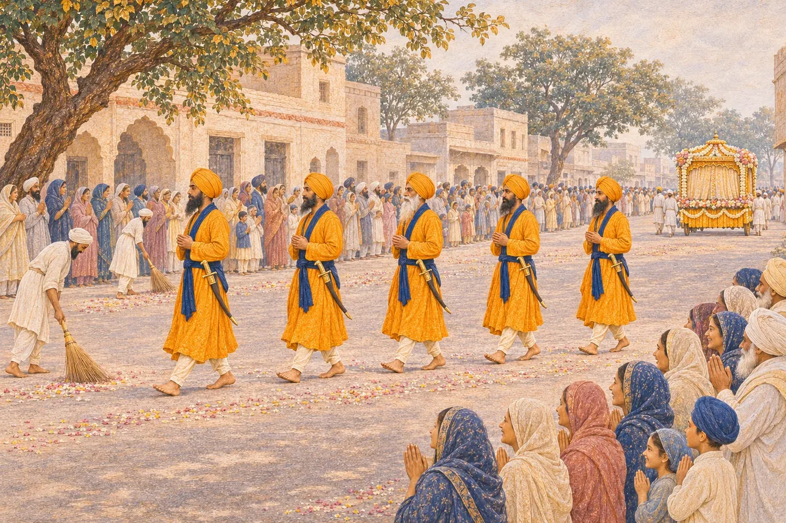
The Panj Pyare lead a Nagar Kirtan through the town.
If you are visiting a gurdwara
Everyone is welcome, and you do not need to be Sikh. Remove your shoes, cover your head (many gurdwaras lend scarves), wash your hands, and do not bring tobacco, alcohol or drugs. Inside, people bow toward Sri Guru Granth Sahib Ji and sit on the floor, taking care not to point their feet toward it. You will likely be offered karah parshad, a warm, sweet blessed food, which is received in cupped hands. Then you will be invited to langar. Say yes. Sikh Rehat Maryada
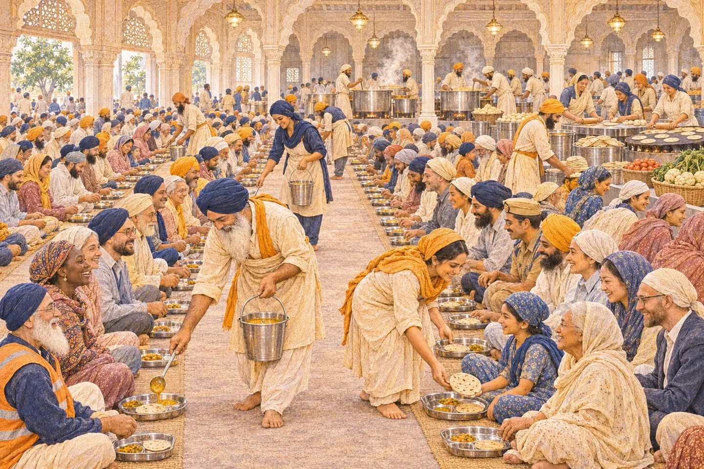
Langar: everyone sits together and shares the same meal.
Chapter 10Guru Nanak Dev Ji’s Living Legacy
Five centuries on, the row at Kartarpur has never really ended. It continues every day in gurdwara kitchens across Punjab, Britain, Canada, Malaysia, Kenya and well beyond. When floods, earthquakes or protests leave people hungry, Sikh volunteers are often among the first to arrive with pots and flour. They are doing what their first Guru did with twenty rupees, according to the story, and what he did for years at Kartarpur, according to the memory of his community.
His questions have not aged much either. We still sort people by birth, by faith, and by money. We still wonder what counts as a good day’s profit. We still live among neighbours we have been taught to keep at a distance. Guru Nanak’s response was never only an idea. It was an arrangement of daily life: earn honestly, remember the One, and sit down to eat with whoever has come.
On the evening of Gurparb, lamps are lit and the hymns go on late. The next morning, someone in the gurdwara kitchen will be up before dawn again, kneading the flour for whoever comes through the door.
Share Gurparb wishes
Download this greeting and share it with family and friends.
A page of Sri Guru Granth Sahib Ji, literally “limb”.
Ardas
The Sikh community’s standing prayer.
Gurbani
The Guru’s Word; the hymns of the scripture.
Gurdwara
The Sikh place of worship, “doorway to the Guru”.
Gurparb
A day commemorating an event in a Guru’s life.
Janamsakhi
Traditional devotional accounts of Guru Nanak’s life.
Kirtan
The singing of Gurbani.
Langar
The free community kitchen and shared meal.
Parkash
“Light”; here, the Guru’s coming into the world.
Rabab
The plucked string instrument played by Bhai Mardana.
Sangat
The congregation; the holy company.
Seva
Selfless service.
Sikhi
The Sikh faith, in its own name; “Sikh” means learner.
Udasi
One of Guru Nanak’s great journeys.
Sources and further reading
Gurbani lines were checked against the BaniDB database. Stories marked as Janamsakhi tradition are devotional accounts and have not been independently verified as historical events.
Sanatana Series is an independent, non-commercial educational blog. Sikhi is a distinct religious tradition with its own scripture, history and institutions, and this guide is offered with respect as an introduction for general readers. It is not a statement of Sikh religious authority. To suggest a correction, please share the passage and a supporting source on GitHub. Sanatana Series on GitHub
Last updated
The illustrations in this guide are interpretive, AI-generated artwork rather than historical photographs. Sources, artwork provenance and editorial checks are recorded separately. Editorial notes